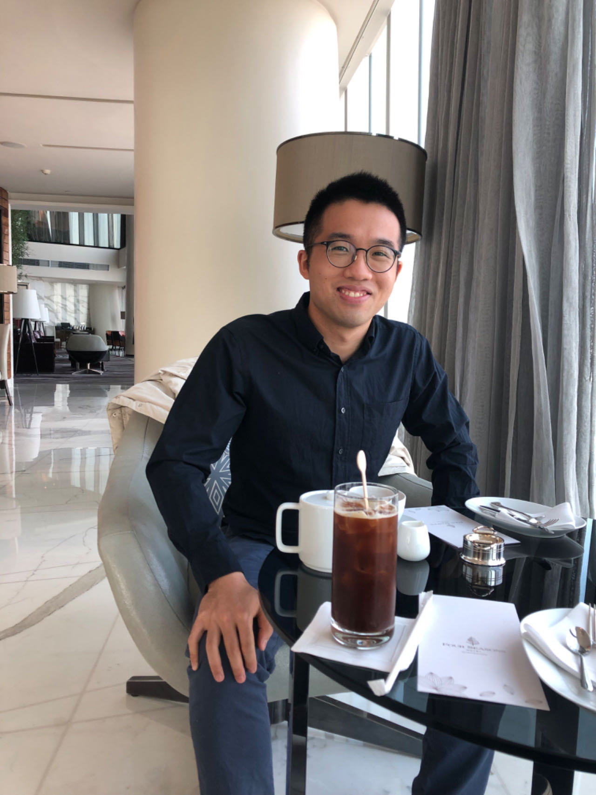

Yu Hu (胡宇)
The Hong Kong Polytechnic University (PolyU), Hung Hom, Kowloon, Hong Kong |
|  |
I am a postdoc fellow supervised by Prof. Anqi Qiu in the Department of Health Technology and Informatics at the Hong Kong Polytechnic University (PolyU). Before that, I was a research associate of Guangdong Artificial Intelligence and Digital Economy Laboratory (Guangzhou), a.k.a, PazhouLab, working with Prof. Mingkui Tan. I obtained my PhD degree at South China University of Technology, under the supervision of Prof. Hongmin Cai. I also worked closely with Prof. Yiu-ming Cheung during my PhD. I was awarded the first prize in natural science of the Guangdong Artificial Intelligence Industry Association, for the contribution to ultra-high-dimensional unsupervised machine learning with its applications to the biomedical field. I serve as a reviewer for prestige journals including IEEE-TNNLS, IEEE-TKDE, IEEE-SPL, and Artificial Intelligence Review. My research interests include tensor-based machine learning/data mining and their applications in high-dimensional data clustering, multi-modal/multi-view clustering, phase retrieval, and medical image analysis. |
|---|